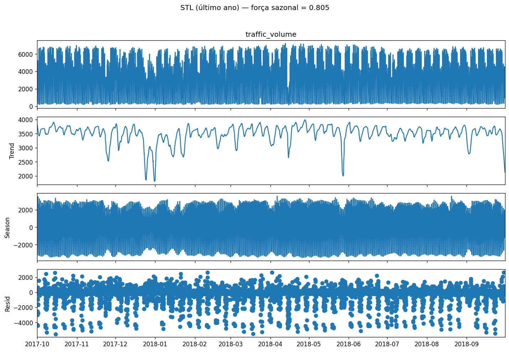
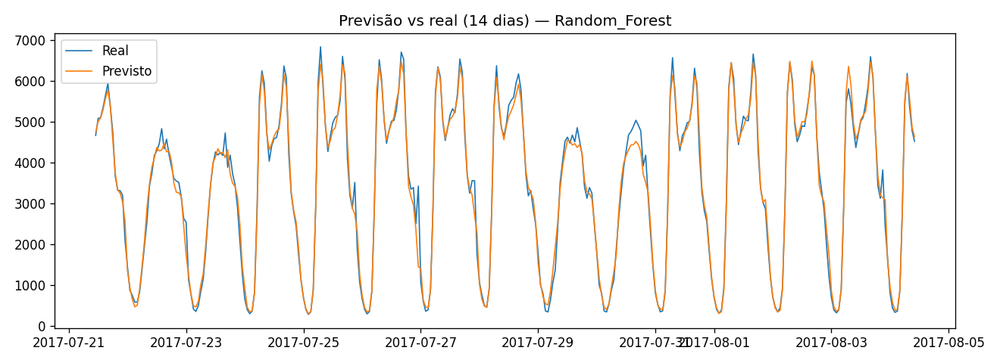
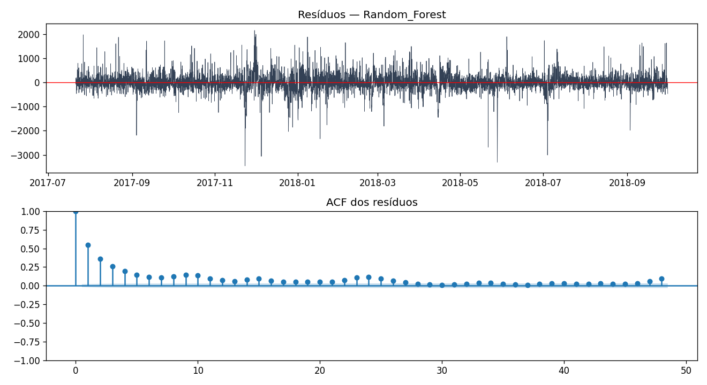
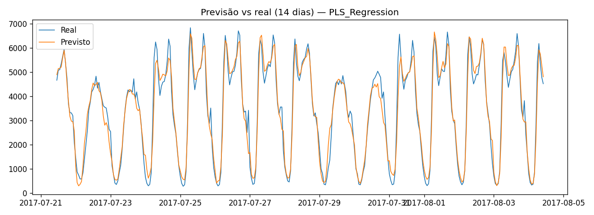
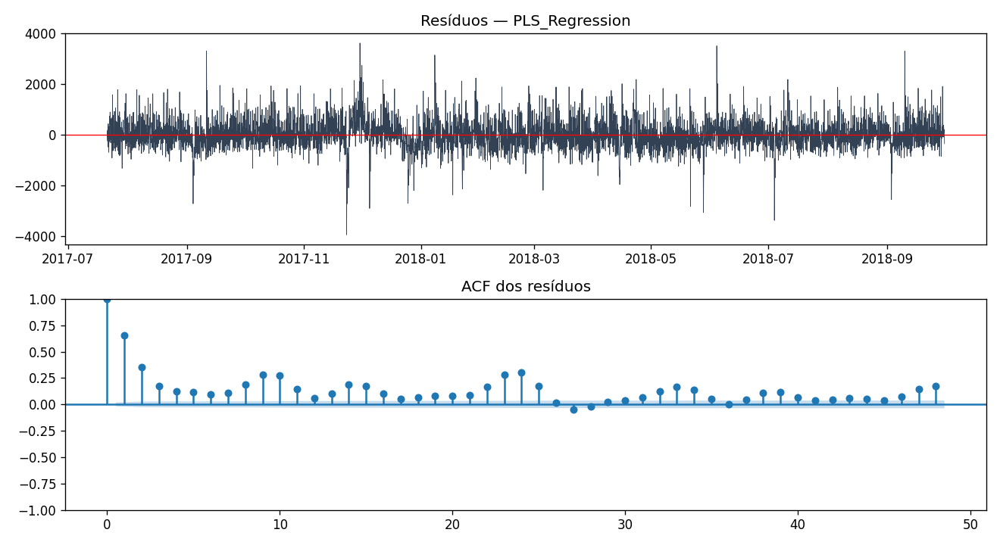
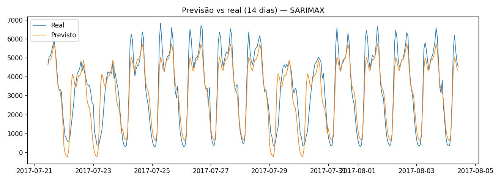
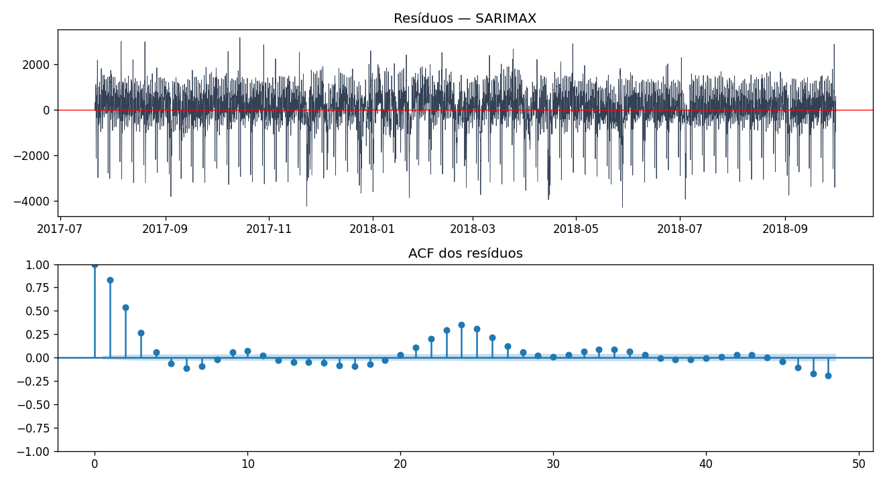
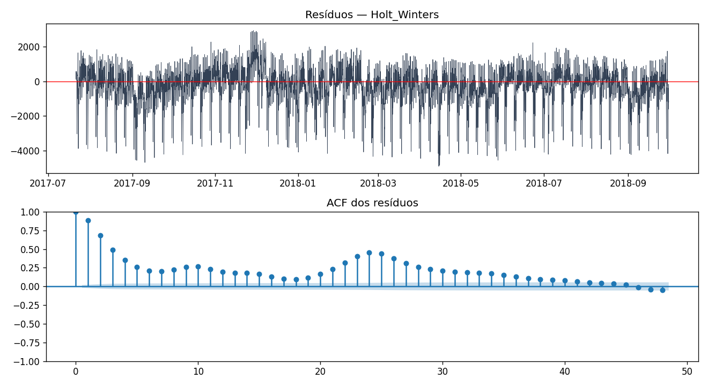

Responsável: Bruna Carvalho Cardoso · Grupo 5 (PLS Regression)
traffic_volume (média 2906.2, máx 7280)Força da sazonalidade (m=24): 0.805.

{'Random_Forest': {'n_estimators': 200, 'max_depth': 24, 'min_samples_split': 2, 'min_samples_leaf': 1, 'max_features': 'sqrt', 'validation_mae': 173.32698510588895}, 'PLS_Regression': {'n_components': 4, 'scale': True, 'validation_mae': 333.00944529949487}, 'Holt_Winters': {'trend': None, 'seasonal': 'add', 'damped_trend': False, 'seasonal_periods': 24, 'validation_mae': 620.1476121678443}, 'SARIMAX': {'order': (2, 0, 1), 'seasonal_order': (0, 1, 1, 24), 'aic': 8307.591588468, 'bic': 8350.906606966937, 'validation_mae': 552.7197868529541}}
| Modelo | MAE | Ljung-Box p (lag 24) | Tempo | Rank |
|---|---|---|---|---|
| Random_Forest | 198.957 | 0 | 147.4s | 1 |
| PLS_Regression | 349.588 | 0 | 8.2s | 2 |
| SARIMAX | 577.873 | 0 | 149.9s | 3 |
| Holt_Winters | 718.850 | 0 | 0.5s | 4 |
Melhor modelo nesta base: Random_Forest (MAE=198.957).






